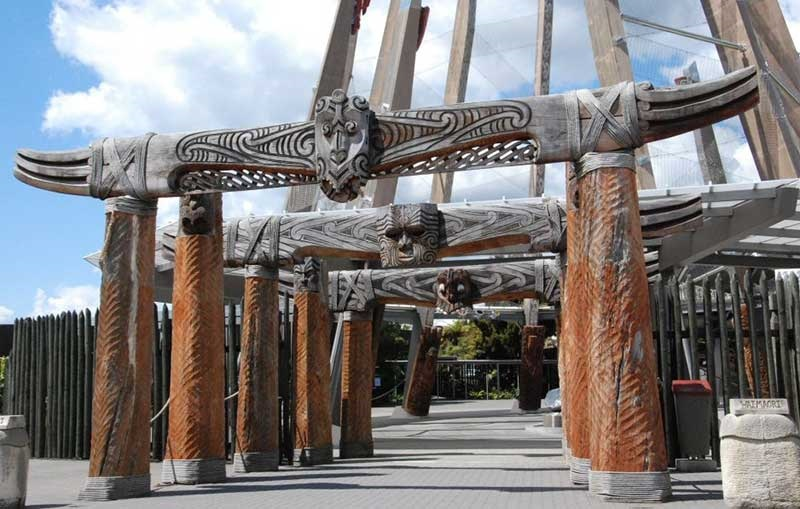
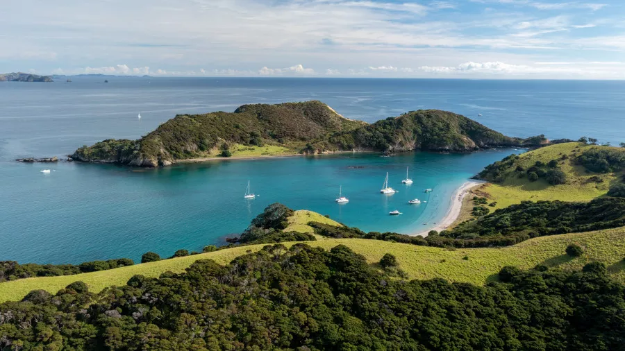
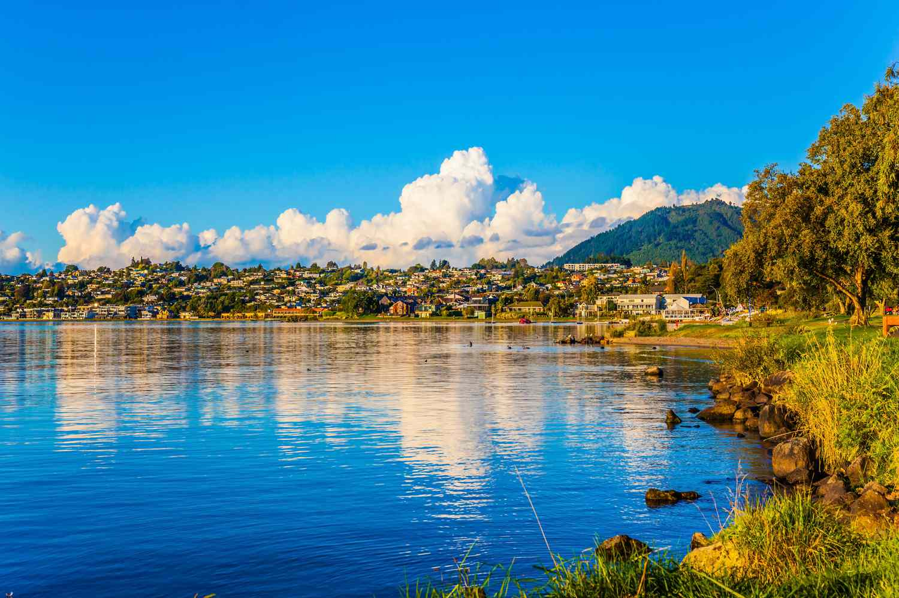
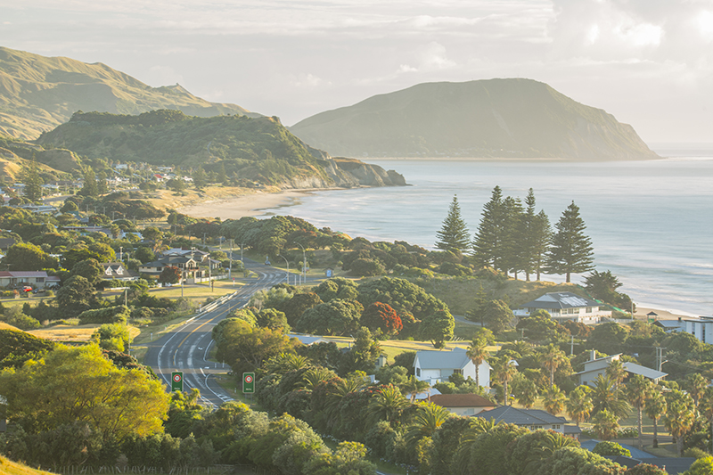
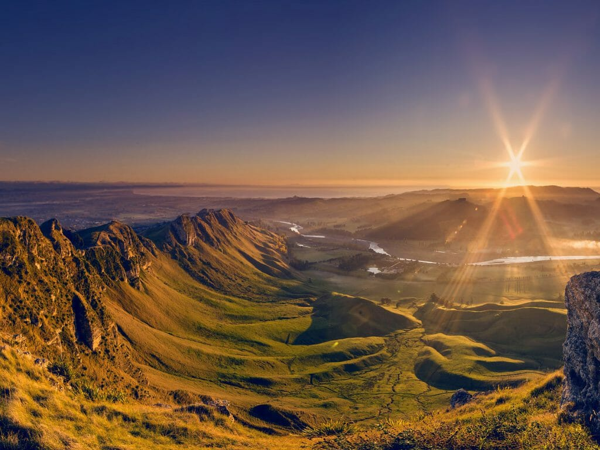

New Zealand, Māori Aotearoa, island country in the South Pacific Ocean, the southwesternmost part of Polynesia. New Zealand is a remote land—one of the last sizable territories suitable for habitation to be populated and settled—and lies more than 1,000 miles (1,600 km) southeast of Australia, its nearest neighbour.
The dominant cultural influence in New Zealand remains Western, with a strong focus on democracy and egalitarianism. Māori culture continues to be an essential part of the national identity, with ongoing efforts to recognise and honour the Māori language and Māori traditions.
New Zealand's economy grew more than expected in the second quarter underpinned by a pick-up in the services sector, and dodged a technical recession, which will help the government, under fire for its handling of the economy ahead of an election. The stronger-than-expected expansion may worry the central bank, which has said it needs slower growth to dampen inflation, and could lead to rates being held at their highest in more than 14 years for longer than anticipated, economists said.
there is lots of places to visit in New Zealand. Most popular are -
The Bay of Islands is a subtropical micro-region known for its stunning beauty & history. For those that love beaches and water activities, it's paradise.
At the centre of our region is sparkling Lake Taupō, the great inland sea of New Zealand. As you travel around the lake, you will find every landscape you can imagine. Snow-blanketed winter ski fields and alpine deserts. Ancient forests alive with birdsong. Trout-filled rivers and the thundering Huka Falls. Steaming geothermal valleys with rejuvenating hot springs. Three towering volcanoes in the extraordinary and otherworldly landscape of Tongariro National Park.
Gisborne is a city in northeastern New Zealand and the largest settlement in the Gisborne District. It has a population of 37,700 (June 2022). Gisborne District Council has its headquarters in the central city.
Award-winning food and wine, outstanding architecture, and warm balmy days surrounded by magnificent landscapes, along with iconic architecture, reliably sunny climate, great food and abundant wineries all combine to give Hawke’s Bay an attractive, almost Mediterranean lifestyle.
A man-made island is surrounded by beautiful backwaters; the Willingdon Island is an engineering marvel. Named after the Viceroy who commissioned its construction, Lord Willingdon, the island is well connected to the mainland by the Venduruthy Bridge.